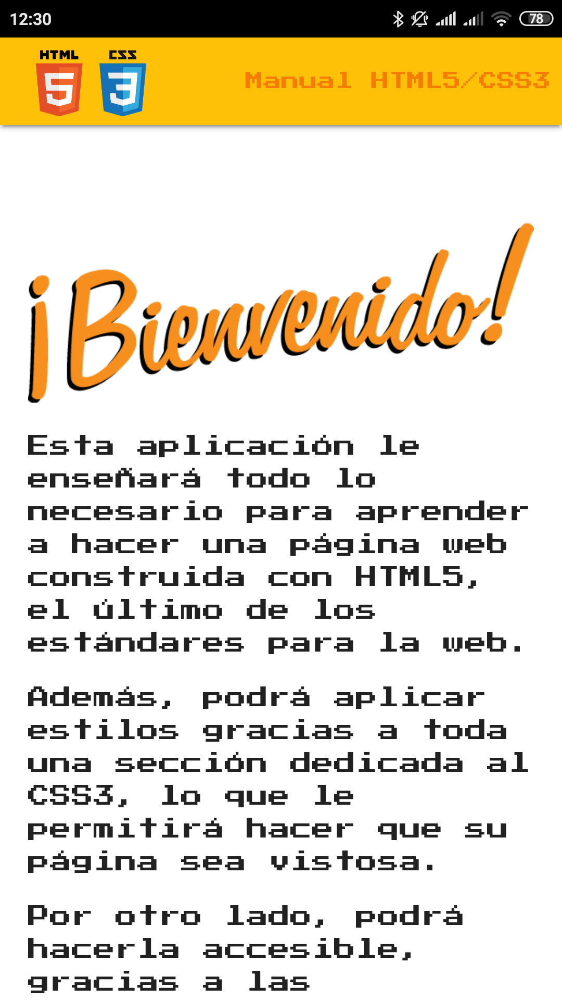
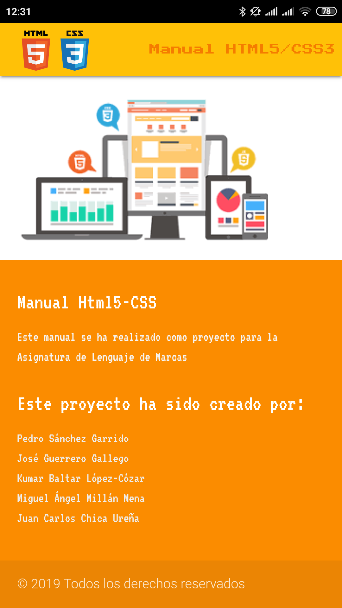

Proyectos
Actualmente tengo un gran proyecto de prácticas terminado y realizado con un grupo de compañeros de clase, un completísimo manual de HTML5 para ayudarte a realizar tu propia página web, todo esto resumido en una sencilla app e intuitiva para android. Por aqui abajo te lo dejo... Algunas capturas:
 
Seguro que después de ver las imágenes tienes ganas de ver más, a si que por aqui te dejo un link para descargar la app y puedas navegar por sus menús y decubrir todo su contenido: Manual HTML5
Recetas
Este apartado es para pequeños "trucos" o ayudas informáticas (o no) que creo que es intersante compartir con vosotr@s para que así también podaís solucionar los posibles problemas, sin tanta dificultad como la que me supuso a mí. ¡Vamos a empezar! 1º Resolver problema: "adaptador wifi no encontrado" sobre todo en portátiles HP: Me ocurrio en el momento más inoportuno. Imáginate, abres tu flamante portátil nuevo HP y te dispones a instalar ubuntu o alguna distribución de linux, todo bien y muy rápido (es linux y esta nuevo) Pero, una vez instalado todo, ves que no tienes conexión wifi, es más el portátil te dice que ni tan siquiera encuentra tarjeta wifi la cuál utilizar. ¡Tranquilo! no desesperes, prueba con este gran tutorial de UbuntuHandbook, escrito paso a paso por Jim: